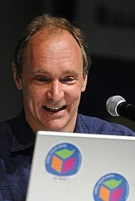
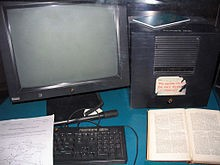

Tim Berners-Lee

Sir Timothy John Berners-Lee, OM, KBE, FRS, FRSA (* 8. Juni 1955 in London) ist ein britischer Physiker und Informatiker.
Er ist der Erfinder der HTML (Hypertext Markup Language) und der Begründer des World ide Web. Heute steht er demWorld Wide
Web Consortium (W3C) vor, ist Professor am Massachusetts Institute of Technology (MIT) und hat seit 2004 einen Lehrstuhl
an der Universität Southampton inne.
Biografie
Erste Jahre Tim Berners-Lee ist der Sohn eines Mathematiker-Ehepaares,
das den Manchester Mark I mitentwickelte. Er beschäftigte sich bereits als Jugendlicher mit Computern. Nach dem Abschluss
an der Emanuel School in Battersea studierte er an der University of Oxford in England Physik, wo er 1976 am Queens College
abschloss. Es folgten zwei Jahre bei Plessey Telecommunications Ltd (Poole, UK). 1978 wechselte er zu D.G Nash Ltd
(Ferndown, UK), wo er als Software-Entwickler arbeitete. In seiner Zeit als beratender Ingenieur hatte er von Juni bis
Dezember 1980 seinen ersten Kontakt zum europäischen Kernforschungszentrum CERN. 1981 bis 1984 war er Direktor von Image
Computer Systems in Bournemouth, kehrte aber 1984 wieder zum CERN zurück.
Berners-Lee und das World Wide Web

Ein Problem am CERN war, dass sich ein Teil der Laboratorien auf französischem Gebiet befanden,
ein anderer Teil auf schweizerischem Gebiet. In den beiden Ländern herrschte eine unterschiedliche
Netzwerk-Infrastruktur, die den Austausch von Informationen erschwerte, wenn nicht unmöglich machte.
1989 schlug Berners-Lee seinem Arbeitgeber CERN ein Projekt vor, das auf dem Prinzip des Hypertexts
beruhte und den weltweiten Austausch sowie die Aktualisierung von Informationen zwischen Wissenschaftlern
vereinfachen sollte. 1990 veröffentlichte er mit Robert Cailliau ein Konzept für ein weltweites
Hypertext-Projekt. In der Folgezeit entwickelte Berners-Lee die Seitenbeschreibungssprache HTML,
das Transferprotokoll HTTP, die URL (der Name kam allerdings erst später), den ersten Browser WorldWideWeb
und den ersten Webserver CERN httpd unter dem Betriebssystem NeXTStep. Dies sollte den Ursprung des World
Wide Webs darstellen. Berners-Lee erstellte die erste Webpräsenz,
http://info.cern.ch
.Diese Website gibt es bis heute; allerdings existiert von dem ursprünglichen Inhalt nur noch eine
Kopie aus dem Jahr 1992. Sie erläuterte unter anderem, was das World Wide Web sein sollte, wie
man an einen Webbrowser kommt, wie man einen Webserver aufsetzt. Ursprünglich war dies auch die
erste einfache Suchmaschine, denn Berners-Lee betreute noch andere Webpräsenzen außer seiner eigenen.
Die Grundideen des World Wide Webs sind vergleichsweise einfach zu begreifen. Berners-Lee sah und
verknüpfte sie jedoch in einer Weise, deren Möglichkeiten bis heute noch nicht vollständig ausgeschöpft
sind. 1994 gründete Berners-Lee das World Wide Web Consortium (W3C) am Massachusetts Institute of Technology. Wichtig war, dass er seine Ideen und technischen Umsetzungen nicht patentierte, sondern
frei weitergab. Auch auf die Maxime des World Wide Web Consortiums, nur patentfreie Standards zu
verabschieden, hatte er starken Einfluss. In seinem Buch Weaving the Web (deutsch: Der Web-Report, 1999)
wird z. B. Folgendes betont: Das Web editieren zu können ist genauso wichtig, wie durch das Web zu browsen.
Computer können genutzt werden, um im Hintergrund Aufgaben zu erledigen, damit Gruppen besser
zusammenarbeiten können. Jeder Bereich des Internets sollte eher eine Netzstruktur als eine Baumstruktur
haben. Erwähnenswerte Ausnahmen sind das Domain Name System und die Regeln für die Vergabe von Domainnamen
durch die ICANN. Informatiker tragen nicht nur eine technische, sondern auch eine moralische Verantwortung.
Berners-Lees Vorstellung von der Zukunft des Internets ist das semantische Web. 2006 forderte er in seinem
Aufsatz „Creating a Science of the Web“ die Etablierung einer eigenständigen Webwissenschaft.
Aktuelles Derzeit lebt Berners-Lee mit seiner Frau Nancy und seinen Kindern Alice und Ben in Lexington,
Massachusetts, USA. Er ist seit 1999 Inhaber des 3Com-Founders-Lehrstuhls am Laboratory for Computer
Science des Massachusetts Institute of Technology (MIT). Zudem steht er dem World Wide Web Consortium vor, dem von ihm gegründeten offenen Forum für Unternehmen und Organisationen, das die weitere Entwicklung
des WWW begleitet. Für 2010 wurde das World Wide Web für den Friedensnobelpreis vorgeschlagen.
Da nur Institutionen mit persönlichen Repräsentanten